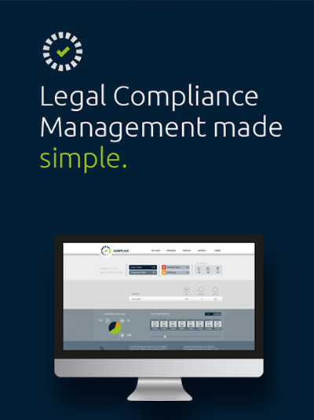

Our Services
Being one the reputed HR companies Twostar Global Pvt. Ltd. is well known for providing effective Manpower Services to the clients as per their requirement, With well-organized staff we make sure that the client organizations get effective solution for their manpower need on a timely basis.
Man Power Supply:
TwoStar Global Pvt. Ltd. provides well disciplined punctual work force to our customer as per their requirements. We specialize in the recruitment of candidates in permanent, contract, temporary and interim positions for the automotive industry jobs. Our team of consultants has been providing capable manpower solutions for automobiles, Electronics manufacturer, Power generation, Ware House Management. Every employee is provided with a proper Identity Card and Company Uniform decided by the respective company.
We meet the requirements of our clients who need unskilled, semi-skilled and highly skilled professionals to be deployed across the India to execute projects within desired deadlines. Our client relationships are informed by trust, discretion and confidentiality. We are absolutely focused on, and dedicated to, the long-term success of our clients without compromising the careers of our candidates.
Payroll Management:
We offer a range of payroll solutions built on years of experience to help you deliver world-class service to your people and contribute to the success of your business.
Designed for businesses of all sizes, TwoStar Global Pvt. Ltd. free you from administrative burdens and compliance worries, so that you can focus on what you do best. This service is delivered by our team of payroll specialists and includes legislative advice, tax year-end support and a programme of updates, covering topics such as changes in the budget and maternity pay.
Staffing Solutions:
TwoStar Global Pvt. Ltd. offers you supreme service in areas such as direct hire, contract, managed services including managed service provider and vendor management systems, vendor on premise, talent mapping, search and selection, campaign management, and payroll management. Using our expertise, TwoStar Global Pvt. Ltd. India is able to source top quality candidates for a variety of professional, engineering and technical opportunities, including Automobile sector, Power Sector, engineering roles, as well as other positions across a range of sectors.
Legal Compliance Management:
TwoStar Global Pvt. Ltd. provides legislative compliance management to its multinational and transnational Clients for their operations in India and in other geographies in which they have a presence.
Our highly qualified and experienced professionals have expertise and experience to solve all types of corporate compliance issues and cases completely and easily. We can help companies in creating a new compliance and ethics program or improve an existing one. Our corporate compliance services include:
- Compliances regarding EPFO
- Compliances regarding ESIC
- Labour Law Compliances
- Compliances with Labour Welfare Department
- Liaison with labor, ESI and PF authorities
- Continuous monitoring of legal compliance
- Easy remittance of statutory payments
Facility Management Services
We provide complete Facility Management Services under one umbrella. You need not run or deal with separate contractors for different services. Our service includes: House Keeping, Garden Development and Maintenance, Electric Maintenance, Plumbing, Pest Control, Swimming Pool Attendant, Lift Attendant, Pump Operator, Fire Fighting, Accounting, Security Services, Care takers, various staff for Star Hotels, etc.
Hospitality Management Services
Athiti Devo Bhavah, Guest is God. TwoStar Global Legend Private Limited has always regarded the high expectations and choices of the guests and understood the importance of each interaction with them. One of the things we do is empower our employees with the knowledge and skills they need to perform their jobs effectively and deliver first-rate service. We aptly understand the term customer service and satisfied guests are paramount for enhancing reputation.
These services include:
-
Catering Management
-
F&B Management
-
Room Services
-
Guest House Management
-
Front Desk & Lobby Management
Guest House Management
We undertake to maintain your Guest House by providing services such as Keeping, Laundry and other. maintenance services round the clock 24X7. Catering, House
Gardening Management Service Development & Maintenance of Gardens includes:
- Lawns Development: We can develop & maintain Lawns of different types like Bermuda Grass Lawn, Posphalam, Carpet Lawn (Kolean).
- Seasonal Flower Beds: We can develop & maintain seasonal flower beds according to different seasons & locations.
- Creepers & Ground Covers: We can develop & maintain different types of creepers & ground covers as per site conditions & client's specifications.
House Keeping Services
Jobs will be undertaken for day to day maintenance & upkeep of Offices, Call Centers, Shopping Mails, Hotels, Clubs, Multiplexes, Hospitals, Factory & Residential Complexes. Under house keeping services, we provide Sweeping, Mopping, Dusting of premises, Toilet Cleaning, Glass cleaning, Terrace Cleaning etc...
Our House keeping Services include:
- Daily Attention
- Attention Fortnightly Attention
- Monthly Attention Basis.
ManPower Supply
- Need Skilled and Reliable Manpower for your Construction Projects
- Factory | Warehouse | Offices ?
- or Any Other Industry ?
- Look no further !
- We provide Experienced Workers to ensure your Project runs smoothly
AND Specialty Cleaning like:
- Carpet, Upholstery cleaning and shampooing.
- Window Washing.
- Fire damage Restoring/Cleaning. Water Damage Restoring/Cleaning.
- Ceiling & Wall Cleaning.
- Facade cleaning.
- Floor Treatment.
- Arrangements for Parties and Receptions.
- Shifting and moving furniture Daily.
- Custodial services for Athletic/Public events.
- Supply for Day to Day Cleaning Materials.
- Post-Constructions cleaning.
Building Management Services
Integrated Building Management System is a complete information delivery system that monitors and controls a variety of systems and functions at an optimal level of efficiency. We have a pool of excellent, fully qualified skilled craftsmen and engineers to undertake any of the following tasks with the utmost care and attention:
- Provide trained operators for proper operation during the working hours and as and when required
- Perform HVAC system inspections and manufacturer recommended preventive maintenance.
- Monitor and adjust system set points and output, thereby providing optimum comfort level and add to energy saving measures
- Coordinate with CEM/AMC for scheduled operation and maintenance Carrying out scheduled preventive maintenance like cleaning of filers for AHU and ventilation fans, lubrication of. pumps, fans and motors as per the checklist designed
- To ensure approval sought and obtained for operations other than normal times
- Maintain log books, checklists and PPM activities chart
Hospital Services
Environmental Hygiene and Patient Care are of paramount importance for the Health care segment. TwoStar Global Legend Private Limited is a one-stop-shop for all your healthcare housekeeping and Patient care services. Using only the most skilled employees who are highly trained on state-of-the-art equipment and procedures, we make sure that not only every surface in your healthcare facility is clean, safe, and sanitary but also the comforts of the patients attended to appropriately.
Pest Control Services
General Disinfections Pest Control Services
The main insects & household crawling pests commonly founds in kitchens and food associated areas are cockroaches, ants, spiders etc. We provide quality Pest Control Services.
Cockroaches are well known carriers of different germs for serious disease problems like salmonella, gastroenteritis, dysentery, and other stomach ailments. We offer quality Pest Control Services and reliable solutions to control cockroach pest problem for offices, Hotels, Apartments, Hospitals, and Houses. We use human safe spray chemical or gel/ herbal to kill cockroaches. It is totally hassle free and safe for the occupants
Pest Control Services controls Red Ants and black ants a liquid odorless chemical is spread as a spot spray. Spiders are crawling pests. Since spiders feed on other insects, removing the food source is necessary. Sweeping of the basement and crawispace inside the premises along with removal of wood piles, high grass and litter around the home will deter infestation. The venom of the black widow spider is toxic. The bite feels like a pin prick or is not even felt.At first, there may be only slight local swelling and two faint red spots surrounded by local edness at the bite. Pain becomes intense in one to three hours and may continue up to 48 hours. Pain usually progresses from the bitten member up or down the arm or leg, finally localizing in the abdomen and back.
Flies are the pathogenic organisms of malaria, yellow fever, elephantiasis, fileria, dysentery & other diseases which are transmitted from animal to man & through various biting flies. Flies can be controlled by chemical spray and thermal fogging. They are also mechanically controlled by Electromagnetic & Ultrasound devices.
Mosquitoes are blood sucking creatures which not only cause nuisance by their irritating bites but also create a health menace, as they are responsible for spreading serious diseases like Malaria, Dengue, yellow fever, Japanese Encephalitis, Chikun Gunya etc.
- Larval Control: Larval stage is the weakest link in the mosquito life cycle, mosquitoes breed in stagnant water. Larval treatment will be carried out after identifying breeding places using suitable larvicide.
- Adult Control: This can be carried out by using the following two methods:
- Indoor and Outdoor Residual spraying: The treatment consists of through spray of insecticides having a residual effect. It shall be sprayed on the inside and outside area of the wall surface.
- Fogging and misting:-Thermal fogging or Misting (Application of insecticides in the form of fine droplets) also can be carried out to control adult mosquitoes. This treatment is generally suggested for the compound area and gardens. Mosquitoes cause human diseases such as West Nile Virus, malaria, and encephalitis, Other mosquitoes may transmit diseases to livestock or pets.
Cleaning Services :
Residential Cleaning
Do you want your House to be cleaned & sanitized for special occasion?
We are the professionals providing following service with Trained & Trusted Manpower:
- One Time Deep Cleaning of your House.
- Special Cleaning & disinfecting for party & functions, Marriage, Birthdays etc. Chemical less steam cleaning & sanitizing your floor, walls, toilets, etc. (For Small Infant Baby/Old Age Persons at home)
- Special Cleaning & disinfecting for party & functions, Marriage, Birthdays etc. Chemical less steam cleaning & sanitizing your floor, walls, toilets, etc. (For Small Infant Baby/Old Age Persons at home)
Sofa and Carpet Dry cleaning Services
With the help of our expertise and trained personnel, we offer services of sofa and carpet maintenance that find application in commercial, residential and offices. Using innovative machines and advanced technologies, we provide services like vacuum cleaning, shampooing and wet drying of carpet. Our team of skilled staff follow specific service procedures to provide best maintenance of the carpets. We also provide maintenance facilities for Sofa including vacuum cleaning, shampooing and wet drying, deep down cleaning. These successfully meet. the requirements of our clients.
Window/Facade / Fascia Cleaning
- We provide high window cleaning services for high rising corporate offices and malls with glass structure.
- The Window and Facade cleaning services provided by us are delivered by a special squad of professional expert at the task.
- We use modern equipment for reaching high rise windows and facade, while superior quality glass cleansers with dust repellents are used for cleaning windows etc.
Carpet Shampooing & Floor Scrubbing
We make use of best of methods to clean your carpets and make them stain and dust free. Our team is well equipped with advanced equipment to perform the job meeting higher cleaning standards. The methodology we follow encompasses following tasks:
- Pre-vacuum
- spots and stains removing
- Dirt extraction
- Through rising